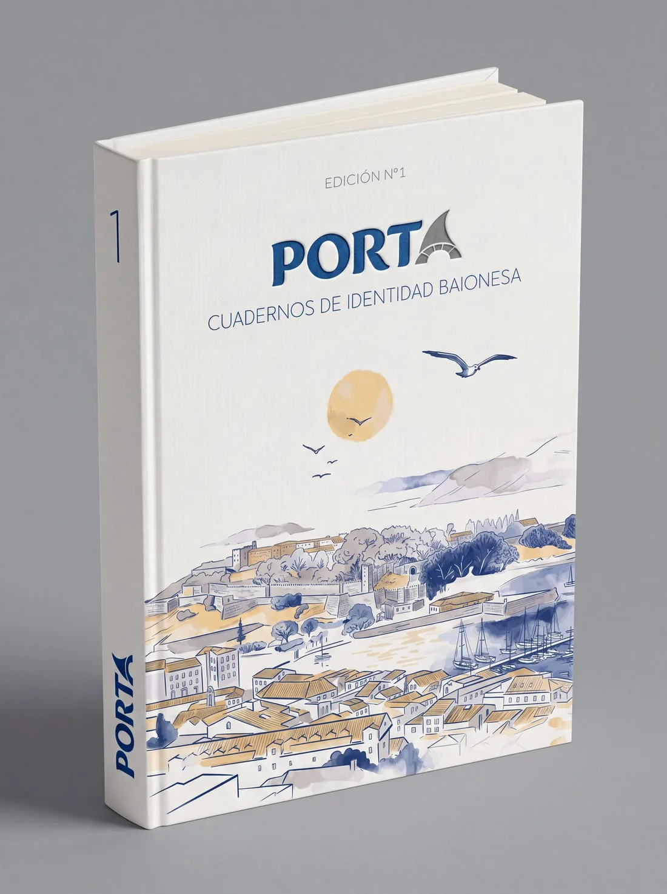

Narrativa Histórica
Da Carta Puebla de Afonso IX (7 de maio de 1201), que converteu Baiona en vila de reguengo, á arribada da Pinta o 1 de marzo de 1493, primeira nova do Novo Mundo en chegar a Europa, e o cerco de Francis Drake en 1585.
Edición en preparación · Reservas abertas
Cadernos de Identidade Baionesa
Un espazo de resistencia matérica.
PORTA (Nº 1) é un caderno monográfico
dedicado á Real Vila de Baiona.
Un libro en español, con títulos e léxico en galego, concibido como arquivo permanente para percorrer a lume lento a historia, os mitos e o patrimonio monumental da Real Vila de Baiona, desde a Carta Puebla de 1201 ata o presente, pasando pola arribada da Pinta en 1493.
Impreso con rigor editorial para habitala desde a contemplación.

Un volume de máis de 100 páxinas, impreso en papel FSC de acabado mate e encadernado en tapa dura. Organízase en cinco seccións (Narrativa Histórica, Ensaio Visual, Patrimonio Inmaterial, Arquivo Visual e Catálogo Monumental) e péchase cun Glosario de Identidade e a bibliografía. O texto está en español, cos títulos das imaxes en galego e en español, e compónse coidando que respire. Primeira edición, Baiona, con publicación prevista para 2027; actualmente en preparación.
Un percorrido pola historia, os mitos e o patrimonio monumental da Real Vila de Baiona (Pontevedra, Galicia), con ilustración, cartografía e fotografía de campo propias.
Da Carta Puebla de Afonso IX (7 de maio de 1201), que converteu Baiona en vila de reguengo, á arribada da Pinta o 1 de marzo de 1493, primeira nova do Novo Mundo en chegar a Europa, e o cerco de Francis Drake en 1585.
Mar Aberto, o camiño da lenda e os petróglifos do Outeiro dos Lameiros, en Baíña: fotografía de campo e textos breves para mirar a modo.
Mitos e serea do imaxinario oral baionés, ritos e lendas da terra, versos do mar e a mesa do Atlántico: oficio e sabor da vila.
Postais e fotografías históricas da Biblioteca de Galicia: a rúa Misericordia, a praza da Erizana, a porta da vila e a ribeira do peixe.
A Fortaleza de Monterreal, o cruceiro da Santísima Trinidade, Santa Liberata, o trazo rexionalista e a Virxe da Rocha, cun mapa ilustrado da baía.
Un índice de termos galegos e mariñeiros, como Erizana, foral, arribada, ronsel, peirao ou gamela, que se destacan no texto cunha nota de lectura.
PORTA Nº 1 péchase con créditos visuais e bibliografía. Non é unha guía turística: é unha maneira de mirar Baiona.
Identidade visual e editorial

Sobre a autora
Edición, Curadoría e Dirección de Arte
Deseñadora editorial e curadora visual. O seu traballo inscríbese dentro da corrente do Deseño Total, unha metodoloxía onde a investigación historiográfica, a redacción, a ilustración e a arquitectura tipográfica converxen baixo unha única visión de autor.
Con PORTA, Aldara propón un manifesto contra a inmediatez dixital. O proxecto nace da necesidade imperiosa de documentar a herdanza inmaterial e pétrea da súa terra, Baiona, afastándose dos ritmos de consumo turístico masivo para abrazar a contemplación.
O seu portfolio, con outros proxectos de deseño editorial e identidade de marca, está en aldaraalvarez.es.
"Nomear o territorio coas palabras que o esculpiron é o primeiro acto de soberanía cultural."
O Volume Fundacional é unha tirada limitada de carácter independente. Apoia este proxecto editorial reservando o teu exemplar físico.
A edición segue en preparación e aínda non existen exemplares físicos; a publicación está prevista para 2027. Deixa os teus datos e poñerémonos en contacto contigo para acordar o método de pagamento e o envío do exemplar.
PORTA. Cadernos de Identidade Baionesa é unha colección de cadernos monográficos independentes dedicada á Real Vila de Baiona. O Nº 1, ou volume fundacional, é un libro de máis de 100 páxinas sobre a súa historia, os seus mitos e o seu patrimonio monumental.
A publicación está prevista para 2027. Polo de agora a edición segue en preparación e aínda non existen exemplares físicos.
O prezo provisional é de 40 €, cos gastos de envío á parte. Resérvase co formulario desta páxina; despois poñerémonos en contacto contigo para acordar o método de pagamento e o envío.
O texto está en español, cos títulos das imaxes en galego e en español, e un glosario do léxico mariñeiro e patrimonial galego.
Poderase reservar desde esta web e, ademais, está previsto un punto de venda físico en Estelas.
Aldara Álvarez González, deseñadora editorial e curadora visual, asina a edición e a dirección de arte, con ilustración, cartografía e fotografía de campo propias. O seu portfolio está en aldaraalvarez.es.